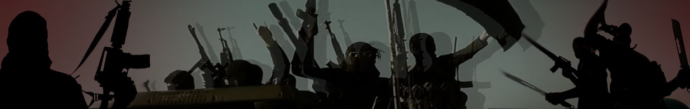

February 16, 2017
A suicide bomber strikes devotees at a Sufi shrine at Sehwan, Sindh. Till the filing of this report, 88 have been reportedly killed and over a 300 injured. Deash claimed responsibility through its media wing.

Timeline: Daesh in Pakistan
By Arfeen SyedIn Iraq and Syria, Daesh is on the back foot, losing fighters as well as the territories it once controlled. As a result, the group has opened up new theatres of operations across the region and claiming devastating attacks in Turkey, Tunisia, Lebanon, France, Belgium, Bangladesh, Philippines, Afghanistan and most recently Pakistan.
Already racked by plethora of terrorist groups since the turn of the millennium, the first breadcrumbs of a trail leading to Daesh in Pakistan appeared in 2014.
Since then, the terrorist organisation has claimed several bomb and gun attacks mostly in the Balochistan and Sindh province. It is still unclear if the group has a direct setup in the country or if it is drawing from an existing pool of militants, often termed by the security authorities as ‘Daesh sympathisers’.
Here, Geo.TV compiles a timeline of incidents and developments in Pakistan, which are linked with Daesh:
February 2017
Pamphlets with the Daesh insignia were distributed in the border area of Khurram Agency. The black and white printouts, with images of beheadings, states that after Daesh’s success in Afghanistan, it will be starting activities in Pakistan’s tribal areas of Hangu and Dera Ismail Khan.
A few days earlier, the resident of Al-Azhar Garden in Karachi received threatening letters and emails from Daesh Khurasan. The Ismaili community that resides in the area was warned to withdraw witnesses in the Safoora attack case, otherwise they will be targeted again.
A few days earlier, the resident of Al-Azhar Garden in Karachi received threatening letters and emails from Daesh Khurasan. The Ismaili community that resides in the area was warned to withdraw witnesses in the Safoora attack case, otherwise they will be targeted again.
November, 2016
Islamic State claims a deadly suicide attack at a Sufi shrine in the Khuzdar area of Balochistan. 52 people were killed and upward to a 100 wounded.
The counter terrorism department in Punjab alerts local authorities about the presence of Daesh affiliated militants in the province, plotting to attack media channels in Islamabad.
“Once again, the next safe haven for fleeing militants from Syria and Iraq would be Afghanistan where its presence has already been established. This is a worrisome phenomenon because ultimately they will strike in Pakistan,” cautions a CTD spokesman.
The counter terrorism department in Punjab alerts local authorities about the presence of Daesh affiliated militants in the province, plotting to attack media channels in Islamabad.
“Once again, the next safe haven for fleeing militants from Syria and Iraq would be Afghanistan where its presence has already been established. This is a worrisome phenomenon because ultimately they will strike in Pakistan,” cautions a CTD spokesman.
October, 2016
The Islamic State says it was behind the storming of a police training college in Quetta, Balochistan that killed 60 cadets. Officials in Balochistan insist that the banned Lashkar-e- Jhangvi Al Almi, not ISIS, carried out the assault. Geo. TV spoke to Ali Bin Sufyan, Almi’s spokesperson, following the attack. “The suicide bombers were provided by the Islamic State. We are under the command of Emirate Islami (Afghan Taliban), but we will provide support to any organization waging jihad in Pakistan,” said Sufyan.
September, 2016
Lt. Gen. Asim Bajwa, the former spokesperson of the Pakistan army, admits that the Islamic State group has a presence in the country. Over 309 people, including foreign nationals, have been arrested in connection to the terror outfit, he says in a press briefing, adding that authorities have thwarted planned ISIS attacks on foreign embassies and the Islamabad airport. This is the first admission by a Pakistani official of ISIS’s footprints in Pakistan. The local leader of the outfit is identified as Hafiz Umar, a Karachi resident.
Later that month, the Sindh government places Rs.2 million bounty on the head of Umar. The 35-year-old militant has personally overseen the bus attack as well as the one that killed Sabeen Mahmud. He was arrested in November and convicted to death by a military court.
Later that month, the Sindh government places Rs.2 million bounty on the head of Umar. The 35-year-old militant has personally overseen the bus attack as well as the one that killed Sabeen Mahmud. He was arrested in November and convicted to death by a military court.
August, 2016
The president of Quetta Bar Association is targeted and killed. When his body is brought to a hospital in Quetta, Balochistan, hundreds of lawyers gathered to pay homage. A suicide bomber blows himself up amidst the gathering, killing 93 people, mostly lawyers and media personnel. Daesh is quick to claim responsibility.
July, 2016
Hafiz Saeed Khan, head of the Daesh Pakistan and Afghanistan, is killed in a US drone strike in Afghanistan.
February, 2016
Aftab Sultan, director general of the Intelligence Bureau, states before the Senate Standing Committee on Interior that Daesh was emerging as a threat in the country because several militant groups, such as Lashkar-e-Jhangvi and Sipah-i-Sahaba Pakistan, have a soft corner for it.
Two days later, Interior Minister Chaudhry Nisar rubbishes Sultan’s statement. Nisar at a media gathering says, "Daesh does not exist in Pakistan. Other terrorist groups, which are involved in activities against the state are using Daesh's name and are causing death and destruction in the country.”
A report by the UK-based Royal United Services Institute estimate 7,000 to 8,000 Daesh members based in Afghanistan and 2,000 to 3,000 based in Pakistan, including fighters and support elements.
Two days later, Interior Minister Chaudhry Nisar rubbishes Sultan’s statement. Nisar at a media gathering says, "Daesh does not exist in Pakistan. Other terrorist groups, which are involved in activities against the state are using Daesh's name and are causing death and destruction in the country.”
A report by the UK-based Royal United Services Institute estimate 7,000 to 8,000 Daesh members based in Afghanistan and 2,000 to 3,000 based in Pakistan, including fighters and support elements.
January, 2016
Pakistan’s law enforcement agencies begin to roundup Daesh sympathizers and active members from across the province of Sindh and Punjab.
Punjab’s Law Minister discloses that over a 100 Pakistanis have left the country to join and fight alongside the radical terrorist group with strongholds in the Middle East.
Three women and 12 children from Lahore go missing. Later, one of the women sends a voice note to her husband in Pakistan confirming she and the other women are in Syria, where her son was fighting alongside Daesh militants. (Link: http://newsweekpakistan.com/pray-your-wife-and-children-die-in-jihad/)
Punjab’s Law Minister discloses that over a 100 Pakistanis have left the country to join and fight alongside the radical terrorist group with strongholds in the Middle East.
Three women and 12 children from Lahore go missing. Later, one of the women sends a voice note to her husband in Pakistan confirming she and the other women are in Syria, where her son was fighting alongside Daesh militants. (Link: http://newsweekpakistan.com/pray-your-wife-and-children-die-in-jihad/)
December, 2015
Punjab’s counter-terrorism department raids a house occupied by militants associated with Daesh in Sialkot and arrests nine. Readout sent by Daesh Sialkot to the media following the raid threatens to overthrow the government. It identifies the men as members of Jamaat-ud-Dawa, who were actively recruiting and arranging funds for Daesh in Pakistan. According to the counter-terror force, the men were in contact with Abu Muavia Salfi, a Pakistani national in Syria, via Skype. “Six more boys from Sialkot are missing,” a CTD spokesman, told Geo.TV, “we now have credible intelligence that all six have been killed fighting in Syria.”
November, 2015
Unidentified armed men toss hand-grenades outside the Faisalabad office of Dunya TV, a local news network. A few days later, another news outlet, Din News, is also targeted in Lahore. While there was no loss of life or injuries, Daesh-stamped pamphlets were found from both crime scenes.
August, 2015
The US-based Long War Journal claims that Daesh has set up a training camp in Pakistan’s tribal areas. Pakistan’s Interior Ministry officially bans Daesh.
July, 2015
Police shoots dead Malik Ishaq, the leader of the banned sectarian militant outfit group Lashkar-e-Jhangvi, his two sons and 11 others in the Punjab province. Ishaq was reportedly going to announce his allegiance to al-Baghdadi.
May, 2015
Eleven gunmen stop a bus carrying members of the Ismaili community near the Safoora Goth in Karachi. The militants fire indiscriminately at the passengers, killing 45 and injuring over 13 people. Both the Pakistani Taliban and Daesh claimed responsibility for the gun attack. However, Pakistan’s foreign office dismisses the Daesh claim and denies its footprints in the country.
Seven days later Sindh’s counter terror authority tracks down Saad Aziz, and four others, suspected of involvement in the Safoora carnage. Subsequent investigations reveal a network of educated, middle-class professionals who bankroll and plan for Daesh in Pakistan. According to a confidential joint interrogation report, seen by Geo.TV, a militant Abdullah Yousaf, travelled from Syria to Karachi to plan the attack. A senior police official, privy to the interrogation, told Geo.TV that Aziz, a university graduate, was running a restaurant at the time of his arrest. The eatery was a front, used to gain access to foreign consulates in Karachi. Last year, a military court convicted Aziz and others, also charged with murdering activist Sabeen Mahmud, to death.
Seven days later Sindh’s counter terror authority tracks down Saad Aziz, and four others, suspected of involvement in the Safoora carnage. Subsequent investigations reveal a network of educated, middle-class professionals who bankroll and plan for Daesh in Pakistan. According to a confidential joint interrogation report, seen by Geo.TV, a militant Abdullah Yousaf, travelled from Syria to Karachi to plan the attack. A senior police official, privy to the interrogation, told Geo.TV that Aziz, a university graduate, was running a restaurant at the time of his arrest. The eatery was a front, used to gain access to foreign consulates in Karachi. Last year, a military court convicted Aziz and others, also charged with murdering activist Sabeen Mahmud, to death.
January, 2015
Daesh officially expands its network of affiliates in at least eight countries. (Link: https://www.wilsoncenter.org/article/timeline-rise-and-spread-the-islamic-state). The terror outfit announces the established of its Khorasan branch for Pakistan, Afghanistan and parts of Iran.
December, 2014
A group of female students from a seminary in Islamabad declare their allegiance to Daesh, in a video recording, and invite it to avenge Operation Silence, carried out against radical clerics of the Lal Masjid.
Police in Karachi detained six women, most of whom were wives of the suspects of the Safoora carnage, recruiting other women on the behalf of Daesh.
Police in Karachi detained six women, most of whom were wives of the suspects of the Safoora carnage, recruiting other women on the behalf of Daesh.
October, 2014
A report by the Sindh’s Home Department reveals that Abid Kohat, from Rawalpindi, has been recruited by Daesh. Kohat, previously associated with the Tehreek-e-Taliban Pakistan (TTP), has been tasked to reach out to disgruntled members of the TTP, Sipah-e-Sahaba and Jaish-e-Mohammad, as well as set up an office in the garrison city and his hometown of Rawalpindi.
The Home Department Balochistan issues a similar notification. “It is reliably learnt that Daesh has offered some elements of Lashkar-e-Jhangvi and Ahl-e-Sunnat Wal Jamaat to join hands with it in Pakistan [sic].” The letter warns that both terror outfits have been assigned to target the Shia community in the province. “Daesh has gathered 10,000 to 12,000 followers from Hangu and the Kurram Agency. They intend to carry out multifaceted attacks on law enforcement agencies and important government installation.”
Shahidullah Shahid, TTP’s former spokesperson, along with five commanders, withdraw their loyalty to the Afghan Taliban and instead pledged fealty to Daesh. A former member of the TTP, Hafiz Saeed Khan, from the Orakzai Agency, is appointed the head of Daesh Pakistan and Afghanistan branch.
The Home Department Balochistan issues a similar notification. “It is reliably learnt that Daesh has offered some elements of Lashkar-e-Jhangvi and Ahl-e-Sunnat Wal Jamaat to join hands with it in Pakistan [sic].” The letter warns that both terror outfits have been assigned to target the Shia community in the province. “Daesh has gathered 10,000 to 12,000 followers from Hangu and the Kurram Agency. They intend to carry out multifaceted attacks on law enforcement agencies and important government installation.”
Shahidullah Shahid, TTP’s former spokesperson, along with five commanders, withdraw their loyalty to the Afghan Taliban and instead pledged fealty to Daesh. A former member of the TTP, Hafiz Saeed Khan, from the Orakzai Agency, is appointed the head of Daesh Pakistan and Afghanistan branch.
July, 2014
Authorities in Pakistan are first alerted of Daesh, also known as IS, ISIS or ISIL, in the summer of 2014, shortly after the group declared the establishment of a caliphate in the territories it controls in Iraq and Syria. In a seven-minute video, posted online, twelve men dressed in black tunics, wielding guns and knives, hold up a banner reading, “Sympathizers of the Islamic State in Pakistan.” The video, which could not be independently verified, ends with an audio message by Abu Bakr al-Baghdadi, leader of the militant group, believed to be hiding in Mosul, Iraq, today.
A hitherto unknown militant outfit, Tehreek-e-Khilaftul Jihad, pledges allegiance Deash in a written statement released online. The terror group was responsible for a failed suicide bombing targeting Basit Shuja, an official of the Sindh Rangers.
The Iraq-based Jamaat Ansar al-Islam releases a video of their militant training camp in Syria. Dozens of men, armed with rocket-propelled grenades and a few anti-aircraft guns, are put through military-style drills. The camp has been named after Abdul Rasheed Ghazi, a radical cleric killed in 2007 after Pakistani troops stormed a mosque in Islamabad.
A hitherto unknown militant outfit, Tehreek-e-Khilaftul Jihad, pledges allegiance Deash in a written statement released online. The terror group was responsible for a failed suicide bombing targeting Basit Shuja, an official of the Sindh Rangers.
The Iraq-based Jamaat Ansar al-Islam releases a video of their militant training camp in Syria. Dozens of men, armed with rocket-propelled grenades and a few anti-aircraft guns, are put through military-style drills. The camp has been named after Abdul Rasheed Ghazi, a radical cleric killed in 2007 after Pakistani troops stormed a mosque in Islamabad.